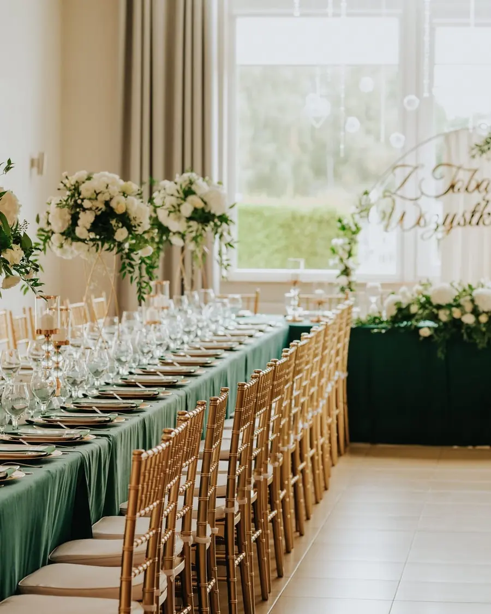
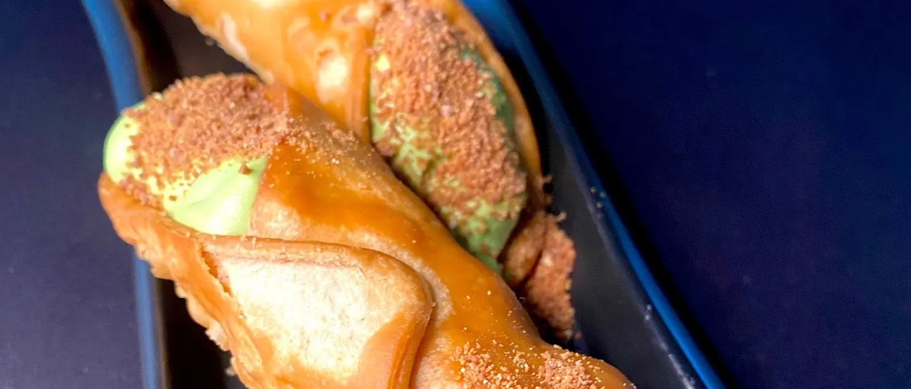
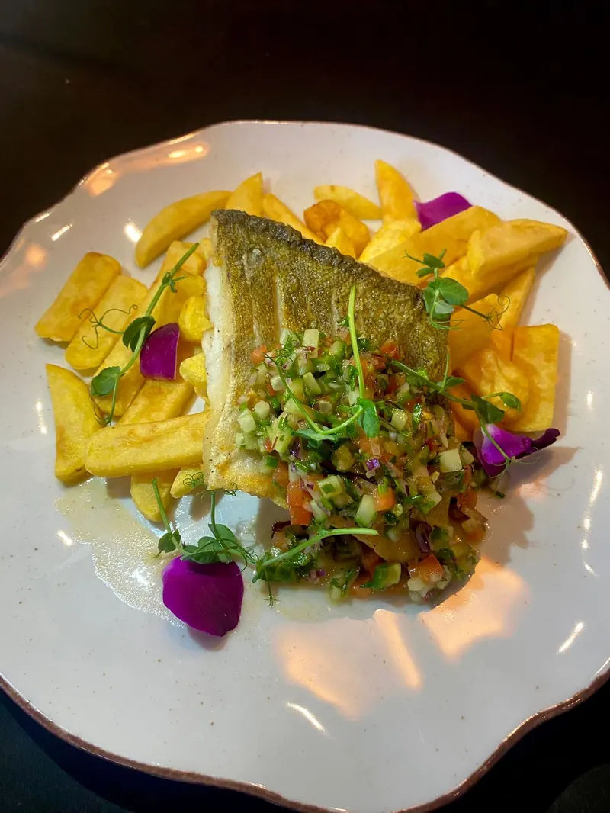
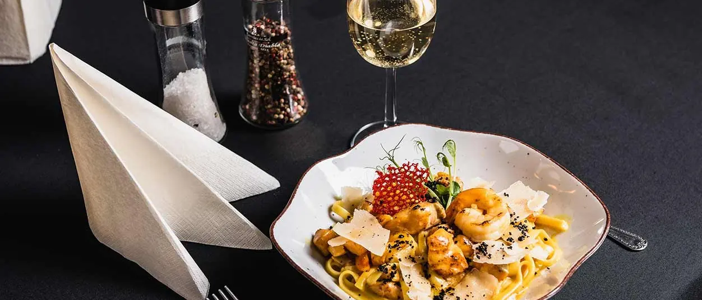
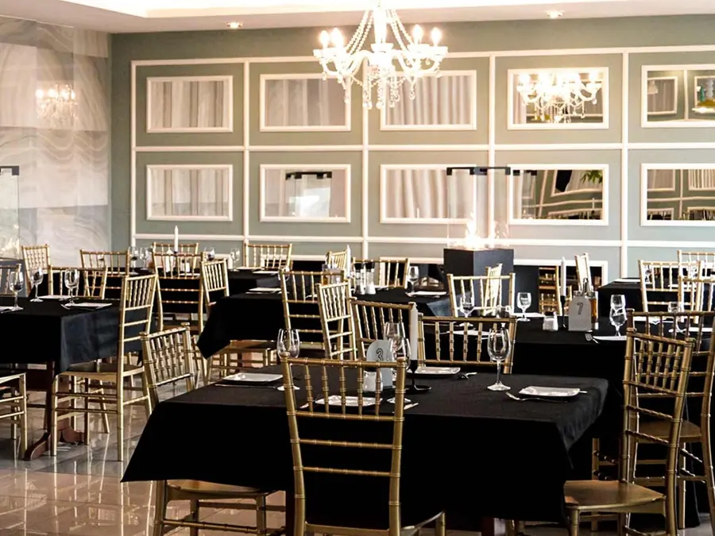
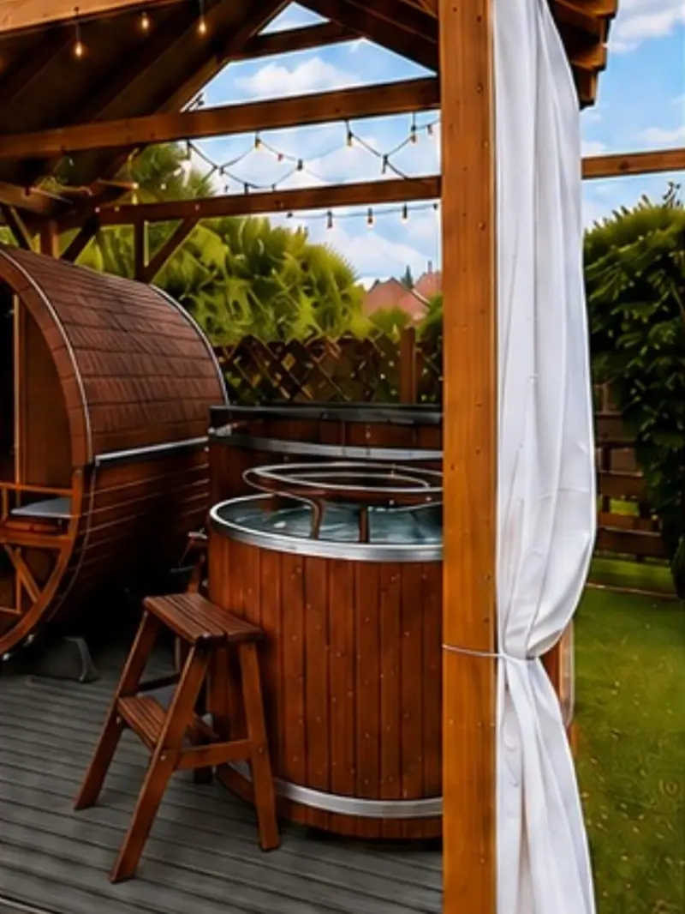

Zajazd Florencja to sala bankietowa, restauracja i noclegi w jednym miejscu. Restaurację poznaliście z Kuchennych Rewolucji.

Najczęstsze pierwsze pytanie przez telefon. Tutaj odpowiedź jest, zanim ktoś zdąży zadzwonić.

Jedno przyjęcie w terminie. Bez dzielenia sali, bez drugiej imprezy za ścianą i bez pośpiechu, kiedy trzeba posprzątać na kolejną.
Zobacz wolne terminy
Byliśmy w Kuchennych Rewolucjach. Co z tego zostało, najłatwiej sprawdzić przy stole w sobotnie popołudnie.
Zarezerwuj stolik

Sauna, jacuzzi i balia w prywatnej części ogrodu. Rezerwujecie całą przestrzeń, nie miejsce w kolejce.
Zapytaj o pakiet